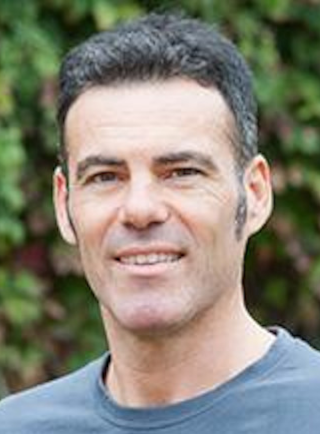

advisory board
About the DataSHIELD Advisory Board
Since 2013, DataSHIELD has grown from a standalone software package, focused on tabular health data, to a multi-faceted framework enabling analysis of disparate data types across international boundaries. The transition from small software project (researchers supporting other researchers), to a larger community brought about the need to convene a body to help steer the future evolution and governance of the project.
The DataSHIELD Advisory Board (DAB) was therefore established in 2020 to ensure that evolution of the DataSHIELD project is driven by the growing international community of users and developers – not just a small number of core developers. The board acts in an advisory capacity to guide the future direction of the DataSHIELD project both strategically and operationally. The adoption of a new governance model will enfranchise the broader DataSHIELD community and will strengthen the project’s strategic planning, decision making, development and user support functions, as well as ensuring that the governance structure is scalable as the numbers of DataSHIELD adopters grow.
Terms of Reference
One of the first objectives of the DAB was to develop Terms of Reference for how we work. After posting a draft document on our Forum, we received feedback from the DataSHIELD community and you can find the final version here.
Advisory Board Minutes
Within these links you can find PDF documents containing the minutes from Advisory Board meetings since the innaugural meeting in October 2020, as they become available.
Meet the Advisory Board Members

Andrei Morgan is a paediatrician / neonatologist, an epidemiogist, and a free software and open science advocate. He trained in the UK but since 2017 has been based in Paris, France, where he works as a researcher at INSERM (Institut National de la Santé et de la Recherche Médicale - the French National Institute for Health and Medical Research), and also does some work as a doctor. His main interest is focused on understanding differences between countries in the organisation of health care and their consequent impact on long-term population health. In his spare time, he enjoys being with friends, good conversation, cooking, reading, cycling and fire juggling.
Dr Andrei Morgan (Chair)Paediatrician/Neonatologist, Epidemiologist, INSERM, Parisandrei.morgan@inserm.fr
Angela is an epidemiologist at the University of Copenhagen, where her research focuses on how early-life exposures influence the gut microbiome, the development of the immune response and the risk of asthma and allergy.
Since 2017, she has been actively involved in the Horizon2020 LifeCycle Project, a collaboration that is bringing together data from multiple birth cohorts across Europe and Australia to establish a FAIR (findable, accessible, interoperable and reusable) data resource known as the EU Child Cohort Network. In this project she has helped to develop protocols for data harmonisation and establish the infrastructure for the federated analysis of data using DataSHIELD.
Angela is now using DataSHIELD to conduct her own research into how early-life exposure to pets influences the risk of allergic sensitization, asthma and impaired lung function in childhood.
Dr Angela Pinot de Moira Postdoc in Epidemiology at University of Copenhagen
Artur has been a senior researcher at INESC TEC, Portugal since 1998. He is assistant coordinator of the Centre for Information Systems and Computer Graphics (CSIG). Current research interests include platforms and methods for collaborative research, privacy-preserving distributed computation, the semantic sensor Web (IoT) and Big Data processing. From October 1996 to December 1997, he was an associate member of CERN - European Laboratory for High Energy Physics, IT Division/Web Office. His research is applied in two major areas: Personalized Health Research (PHR) and Earth and Ocean Observation Science (EOOS). The PHR area currently subdivides into: a) personalised Internet-based treatments; and b) human data storage, privacy-preserving processing and controlled FAIR data sharing. In this area, he participates in several European projects, including ICT4Depression (FP7), E-COMPARED (FP7), STOP Depression (EEA Grant), iCare4Depression (FCT), RECAP Preterm (H2020), EUCAN-Connect (H2020) and iReceptor Plus (H2020). In these projects, he often undertakes the responsibility for the system’s architecture, platform implementation, or technical coordination.
Dr Artur RochaSenior researcher at INESC TEC and Assistant Coordinator of the Centre for Information Systems and Computer Graphics (CSIG), Porto
Becca Wilson is an interdisciplinary researcher with a career spanning the space, atmospheric and health sciences. She is currently at University of Liverpool developing open source software for the sharing, access and immersive data visualisation of sensitive health data. Becca holds significant expertise in science communication and public engagement – working with schools, museums and funders nationally. She is passionate about increasing diversity in STEM, particularly amongst ethnic minority groups and people with disabilities, and is a disability activist committed to improving inclusivity in the academic sector. She blogs for AccessAble about accessibility and is a massive whisky geek!
Dr Becca WilsonResearch Fellow at Liverpool University

Juan R Gonzalez is an Associate Research Professor at ISGlobal where he leads the Bioinformatic Group in Genetic Epidemiology (BRGE). He has co-authored more than 160 scientific papers published in peer-reviewed journals and has extensive experience in large international research projects. As an Adjunct Professor at the Department of Mathematics at Autonomous University of Barcelona, his educational activities focus on providing graduate lectures on advanced statistical methods and post-graduate lectures in biostatistics and in omic data analyses based on his book “Omic association studies with R and Bioconductor”.
His work focuses on the development of statistical and computational methods for the analysis and comprehension of different omic data motivated by a wide range of questions of biological and clinical relevance. These include genomic (CNVs, inversions, mosaicisms, loss of chromosome Y), transcriptomic (RNA-seq and alternative splicing) and proteomic among others. The analysis of the exposome, its characterization and how to integrate it with different omic layers is also another active line of research of his group as part of an FP7 European project called HELIX whose aims are going to be further investigated in the H2020 project called ATHLETE to which Juan R Gonzalez is a WP leader. His group is also very active in developing tools to perform non-disclosive data analyses using DataSHIELD (https://github.com/isglobal-brge).
Prof Juan Ramón GonzálezAssociate Research Professor at ISGlobal Barcelonajuanr.gonzalez@isglobal.org
Kim is a physician and specialist in healthcare management. She is a PhD candidate at Generation R, Erasmus MC, The Netherlands. Her area of interest is the relation of substance abuse during pregnancy, and metabolic, psychological or psychiatric disorders in childhood and adolescence.
Dr Kim Cajachagua Torres PhD candidate at Generation R, Erasmus MC, The Netherlands

Rosa Gini is a data scientist and the head of the Pharmacoepidemiology Unit of ARS Toscana, a research centre of the regional administration of Tuscany, Italy. She is a mathematician by training. Her main interest is methodology to conduct pharmacoepidemiologic multi-database studies. She is an elected member of the Steering Group of the European Center for Pharmacoepidemiology and Pharmacovigilance.
Simon is the Data Steward for a new project at the German Cancer Research Centre (DKFZ) working with genomic data and a Data Consultant for Cancer Research UK. Prior to this he was the Data Liaison Manager at CRUK and a Senior User Support Officer at the UK Data Service. At CRUK he oversaw the creation of a Trusted Research Environment which enabled researchers to work with patient-level data safely. For a few years, he has been involved in the Safe Data Access Professionals group through which he has focused on the development of Statistical Disclosure Control processes for assessing the disclosure risk from research outputs and associated training materials. Usually, outputs leaving a Safe Setting are checked to ensure that there is minimal risk that data subjects could be re-identified, and this checking is done manually. He has been interested in the potential for DataSHIELD to improve this process for some time, and in light of the recent Schrems II verdict, is excited by its potential to facilitate international research collaboration.
Simon ParkerData Steward at the German Cancer Research Centre (DKFZ)
Stuart Wheater is a senior member of the DataSHIELD team, involved in all aspects of the development and maintenance of the DataSHIELD system, with expertise in managing the release, continuous integration and quality assurance processes.
He received his Ph.D. in Computing Science (1990) and worked for over 10 years as a senior member of the influential Arjuna research team and was a founding Director of Arjuna Solutions Ltd before company acquisition mandated his move to Bluestone Software and, in turn, Hewlett-Packard as a Distinguished Engineer. Stuart is currently the Managing Director at Arjuna Technologies which develops products in the area of reliable distributed computing systems. Stuart maintains his research interest as a Visiting Fellow to Newcastle University.
Dr Stuart WheaterRelease, Continuous Integration and Quality Assurance Managerstuart.wheater@newcastle.ac.uk
Yannick is the leader of the OBiBa project and owner of the Epigeny consulting company. In charge of the design and implementation of the DataSHIELD middleware: the DataSHIELD R and Java APIs, and the Opal data warehouse. Maintainer of various R packages (DSI, DSOpal, DSLite, resourcer, opalr) available in the official R packages repository. He is committed to finding innovative solutions for big and complex data handling in DataSHIELD.